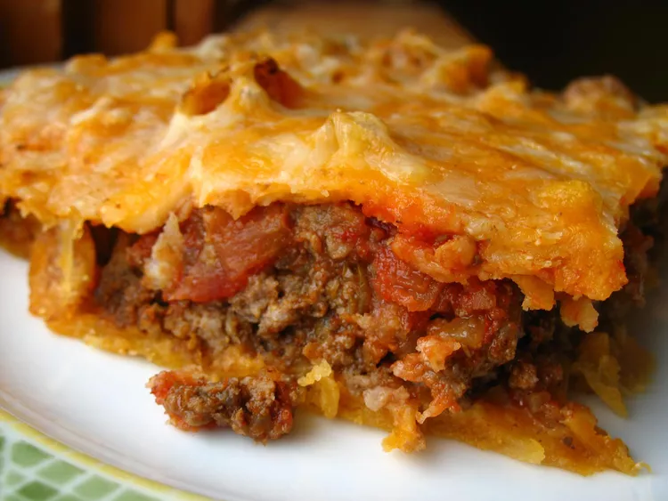

How to Make Lasagna
The Secret Behind This Classic Lasagna Recipe
From what I can tell, the secret behind Alton's lasagna is the addition of a
little sugar to the sauce and using a bit more cheese than most other recipes.
There are a few minor tweaks to his original recipe that I found necessary,
for example adding a dash of wine vinegar to the sauce and changing the
amount of Parmesan cheese.
Ingredients
For the meat sauce
- 2 teaspoons extra virgin olive oil
- 1 pound ground beef chuck
- 1/2 medium onion, diced (about 3/4 cup)
- 1/2 large bell pepper (green, red, or yellow), diced (about 3/4 cup)
- 2 cloves garlic, minced
- 1 (28-ounce)can good-quality tomato sauce
- 3 ounces tomato paste (half a 6-ounce can)
- 1 (14 ounce) can crushed tomatoes
- 2 tablespoons chopped fresh oregano, or 2 teaspoons dried oregano
- 1/4 cup chopped fresh parsley (preferably flat leaf), packed
- 1 tablespoon Italian seasoning
- 1 pinch garlic powder and/or garlic salt
- 1 tablespoon red or white wine vinegar
- 1 tablespoon to 1/4 cup sugar (to taste, optional)
- Salt
To assemble the lasagna
- 1/2 pound dry lasagna noodles (requires 9 lasagna noodles - unbroken)
- 15 ounces ricotta cheese
- 1 1/2 pounds (24 ounces) mozzarella cheese, grated or sliced
- 1/4 pound (4 ounces) freshly grated Parmesan cheese
- Start by making the sauce with ground beef, bell peppers,
onions, and a combo
of tomato sauce, tomato paste, and crushed tomatoes. The three kinds of
tomatoes gives the sauce great depth of flavor.
- Let this simmer while you boil the noodles and get the cheeses
ready.We're using ricotta, shredded mozzarella, and parmesan -- like
the mix of tomatoes, this 3-cheese blend gives the lasagna great flavor!
- From there, it's just an assembly job.A cup of meat sauce, a
layer of noodles, more sauce, followed by a layer of cheese. Repeat until you
have three layers and have used up all the ingredients.
- Bake until bubbly and you're ready to eat!